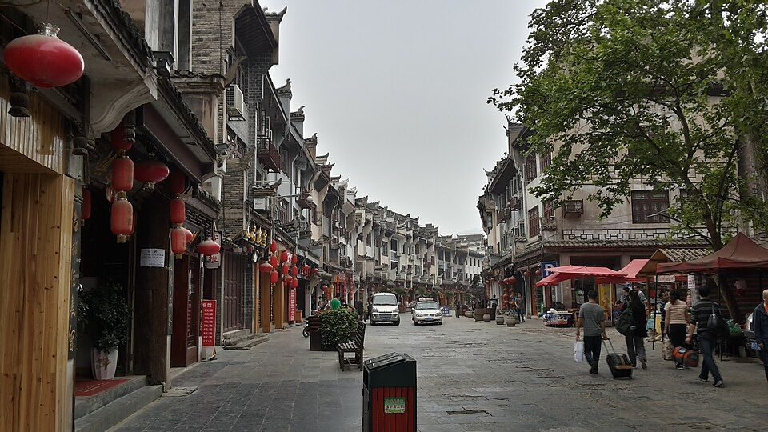
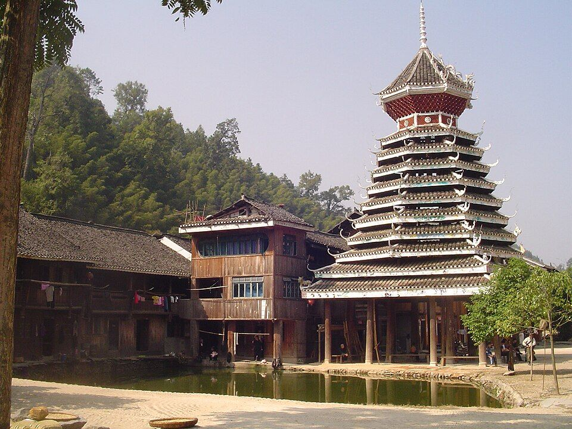

先看结论
- 黔东南适合 3-5 天苗侗村寨、古镇、梯田和酸汤美食线，核心是西江千户苗寨、镇远古城、肇兴侗寨、堂安梯田、凯里酸汤
- 第一梯队西江千户苗寨、镇远古城、肇兴侗寨、堂安梯田、郎德上寨、凯里民族风情园/小吃
- 第一次来建议“凯里/西江 + 镇远 + 肇兴”三段，不要每天换太多村寨
- 必吃关键词酸汤鱼、牛瘪火锅、凯里酸汤粉、糯米饭、侗家腌鱼、长桌宴、米酒
快速决策索引
全年月份速查
- 1 月适合镇远、凯里吃喝；吃酸汤鱼；注意湿冷
- 2 月适合苗年/春节活动；吃长桌宴；注意住宿涨价
- 3 月适合村寨春景；吃糯米饭；注意雨水增多
- 4 月适合西江和肇兴春游；吃酸汤粉；注意清明客流
- 5 月适合梯田灌水、村寨；吃腌鱼；注意五一分时预约
- 6 月适合堂安梯田和避暑；吃冰粉、米酒；注意雨季山路
- 7 月适合避暑和民族节庆；吃酸汤鱼；注意暑期团队
- 8 月适合村寨夜景和梯田；吃烧烤；注意暴雨和滑坡公告
- 9 月适合稻田转黄；吃新米糯食；注意国庆提前订
- 10 月适合秋色和村寨摄影；吃牛瘪火锅；注意国庆错峰
- 11 月适合镇远慢游和低人流村寨；吃热汤锅；注意夜间冷
- 12 月适合古镇和村寨慢游；吃酸汤鱼；注意湿冷防潮
季节限定景观
景点营业时间和票价速查
- 西江千户苗寨常见 08:00-18:00 或延长，门票常见约 90 元，观光车约 20 元，需实名预约
- 镇远古城开放式/免费；青龙洞、舞阳河游船等单点收费
- 肇兴侗寨常见白天到夜间开放，门票常见约 80 元，观光车另计
- 堂安梯田开放式村寨/梯田，以交通和停车消费为准
- 郎德上寨门票和表演以景区公告为准
- 凯里民族风情园开放式或项目收费，以现场为准
行前准备
- 村寨多为石板路和坡路，拖箱不方便，行李尽量轻
- 西江和肇兴节假日限流和停车压力大，住宿尽量早订
- 民族节庆、长桌宴、歌舞表演需要看当天场次
住宿建议
- 凯里市区适合中转、吃酸汤鱼和去西江
- 西江苗寨内适合夜景和清晨，缺点是拖箱和噪音
- 镇远古城适合夜景和慢住，河景房价格高
- 肇兴侗寨适合侗寨和堂安梯田，住一晚更完整
地图分区
- 凯里片区交通中转、酸汤鱼、郎德/西江门户
- 西江片区苗寨夜景、观景台、长桌宴
- 镇远片区古城、舞阳河、青龙洞、夜景
- 肇兴片区侗寨、鼓楼、堂安梯田、徒步
核心景点
-
西江千户苗寨
- 介绍中国高频苗寨目的地，夜景和山地吊脚楼最出圈
- 最佳时间春秋、夏夜、节庆期
- 看点观景台、风雨桥、嘎歌古巷、苗族博物馆、长桌宴
- 搭配路线凯里、西江、镇远
- 是否值得专程去第一次来黔东南值得
- 营业时间常见 08:00-18:00，夜间寨内可逛
- 票价/预约方式门票和观光车线上预约
- 游玩提醒商业化明显，住半山注意行李搬运
-

开放图库 镇远古城游玩攻略最佳时间：春秋、夏夜；看点：祝圣桥、青龙洞、舞阳河、石屏山、古巷- 介绍舞阳河穿城而过的古城，夜景和青龙洞是核心
- 最佳时间春秋、夏夜
- 看点祝圣桥、青龙洞、舞阳河、石屏山、古巷
- 搭配路线西江或肇兴之间中转
- 是否值得专程去值得住一晚
- 营业时间古城开放式
- 票价/预约方式古城免费，单点另计
- 游玩提醒河景房旺季贵，夜间酒吧区可能吵
-

开放图库 肇兴侗寨游玩攻略最佳时间：春秋和稻田季；看点：五座鼓楼、侗族大歌、花桥、堂安梯田- 介绍侗族鼓楼群和侗寨生活代表，适合慢住
- 最佳时间春秋和稻田季
- 看点五座鼓楼、侗族大歌、花桥、堂安梯田
- 搭配路线高铁从江站、肇兴、堂安
- 是否值得专程去值得
- 营业时间景区全天可逛，检票以公告为准
- 票价/预约方式门票和观光车以平台为准
- 游玩提醒不要只拍主街，清晨和傍晚更好
-
堂安梯田
- 介绍肇兴周边梯田和徒步代表
- 最佳时间5-6 月灌水、9-10 月稻田
- 看点梯田、侗寨、徒步下山到肇兴
- 搭配路线肇兴半日
- 是否值得专程去喜欢徒步摄影值得
- 营业时间开放式
- 票价/预约方式免费或交通费用
- 游玩提醒雨天山路滑，返程车提前问
街区/夜市/市场
- 凯里老城和小吃街酸汤鱼、酸汤粉、糯米饭
- 西江主街长桌宴、米酒、苗绣和旅拍
- 镇远河边街区夜景餐饮、酒吧、酸汤鱼
- 肇兴主街侗家菜、咖啡、手作店
美食总表
- 特色菜凯里酸汤鱼、牛瘪火锅、侗家腌鱼、稻花鱼
- 小吃酸汤粉、糯米饭、米豆腐、烤香猪、烤豆腐
- 饮品米酒、冰粉、酸梅汤、贵州茶
- 夜市凯里夜宵、镇远河边、肇兴主街
- 农贸市场凯里菜市、镇远早市，可看地方食材
- 伴手礼苗绣、银饰、侗布、酸汤调料、米酒
餐厅和店铺
- 凯里酸汤鱼老店多人正餐优先，问清鱼种和斤两
- 西江长桌宴重氛围，口味预期放平
- 镇远河边酸汤鱼看明码标价和河景位
- 肇兴侗家菜馆推荐腌鱼、糯米饭、稻花鱼
博物馆和展馆
- 西江苗族博物馆了解苗族服饰、银饰和迁徙
- 镇远青龙洞古建筑群古建筑和宗教文化
- 黔东南州民族博物馆凯里雨天补充
自然/远郊/周边
- 雷公山自然保护和避暑，需查开放
- 加榜梯田远郊摄影线，适合自驾和住一晚
- 岜沙苗寨岜沙文化体验，适合从肇兴/从江延伸
路线模板
交通细节
- 凯里南站适合去西江，镇远站适合镇远古城，从江站适合肇兴
- 黔东南点位分散，不建议每天跨大范围赶路
- 村寨接驳车和观光车旺季排队，预留时间
避坑和取舍
- 西江商业化强，但夜景和规模仍值得第一次看
- 村寨旅拍价格差异大，拍前问清套系和底片
- 不要把西江、镇远、肇兴都压进 1 天
- 山路雨季易受影响，远郊梯田看道路公告